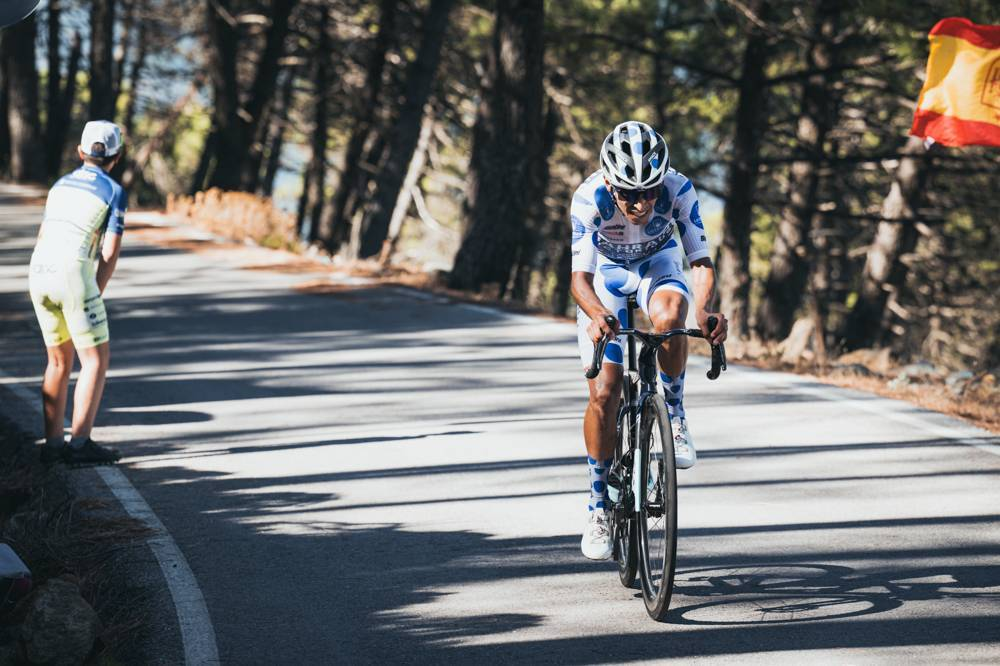
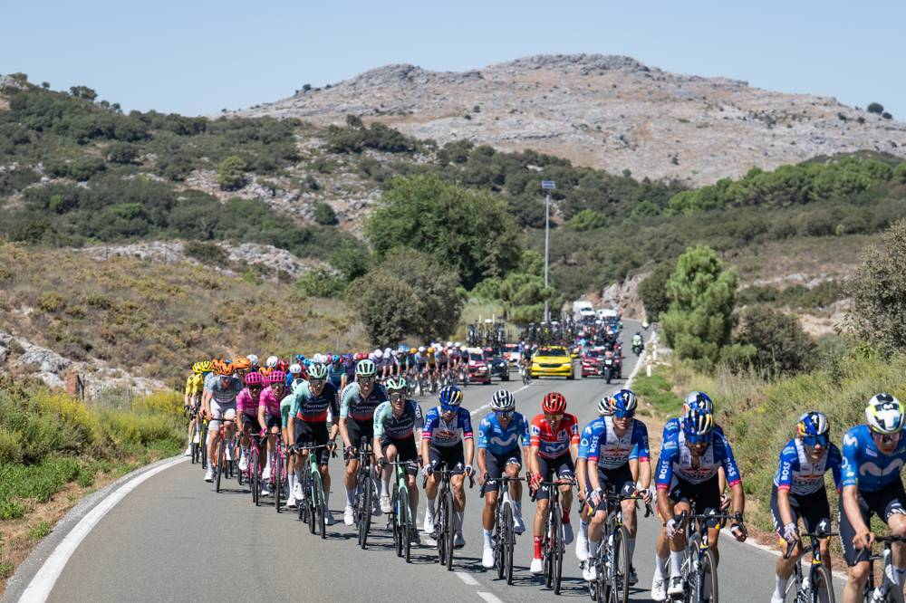

Dunbar never gives up
11 Sep 2026
Stage 19 summit. Fist up under the Carrefour arch — first win since Vuelta ’24.
Saturday 12 Sep 2026
Stage 19, Fri 11 Sep: Vélez-Málaga → Peñas Blancas. Estepona, 210.8 km (~4,000 m climbing), Cat. 1 summit (18.8 km @ 6.5%). Winner Eddie Dunbar (Pinarello-Q36.5) 5:00:54; 2. Santiago Buitrago +0:14; 3. Thomas Gloag +0:23; 4. Urko Berrade +0:44; 5. Marcel Camprubí +1:44. GC group (Mas, Roglič, Gall, Carapaz, Onley) +5:11. DNS: Stefan Küng, Yevgeniy Fedorov. DNF: Paul Double.
GC: red Mas 65:52:03; Roglič +1:37; Gall +3:01; Carapaz +5:17; Onley +6:03 (white, +1:03 on Omrzel). Green van Aert 306. Polka Buitrago 78. Tomorrow Stage 20: La Calahorra → Collado del Alguacil, 186.8 km mountain — last real GC knife before Granada.
Three hours of breakaway war, Carapaz lighting fuses mid-stage, then a 16-man move finally sticks with seven minutes into Peñas Blancas. Buitrago goes at 2 km — looks gone — and Dunbar, who told the radio at km 60 that today wasn’t his day, pulls him back and kicks with 350 m to go. First win since Vuelta ’24. Pinarello-Q36.5 put three in the top five.
Among the favorites: Roglič tried inside the last two kilometres. Mas answered. Same time, same 1:37. The TT didn’t crack him; the Cat. 1 didn’t either. One mountain left.
11 Sep 2026
Stage 19 summit. Fist up under the Carrefour arch — first win since Vuelta ’24.

11 Sep 2026
+14″ again. Polka stays at 78; the stage win doesn’t.

11 Sep 2026
Roglič’s dig finds nothing. One mountain left: Alguacil.